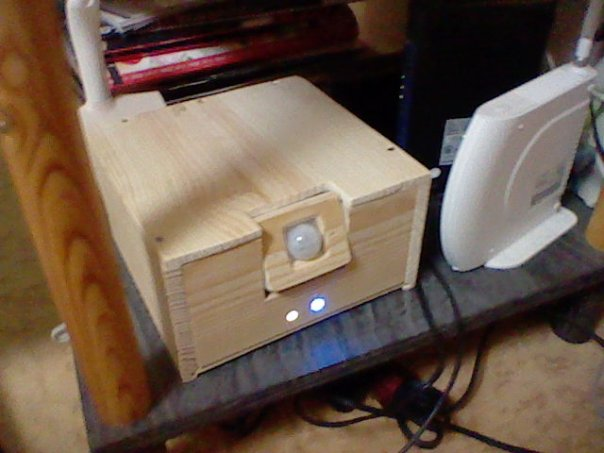
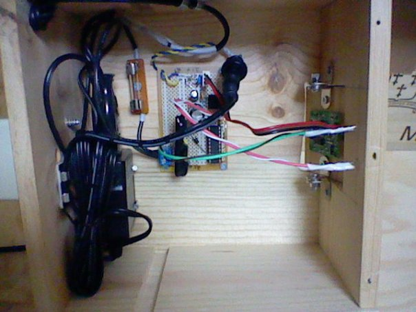

Not complicated project at all, however special care must be payed since we'll be playing with the big boys and the AC wall power. If careless, at least magical smoke, at worse a fire or frying your myocard.
20101130: well, the 2 babies I made months ago (10 months ago for the 1st version) are still perfectly working with not a single issue. Mine is still in the entrance of my appartment turning on light when I walk in, and the other one at my gf appartment turning on the light when she goes to the bathroom. Quite happy to see there are some projects I can build and have it run for months.

20111101: for the record, the version 1 made in January 2010 (soon 2 years ago) is still running just fine in my entrance. I'm quite proud yes. 2 years of electronics later, I notice that yeah, the diode before the SSR could be spared, but it would have been safer to add a resistor or better, to have a transistor drive the SSR (extensively used in Clapclap 2313). Anyway, still working so colclusion the baby has internal resistance and does not require much more than 20mA otherwise the uC would have fried long ago... lucky me!
Components
- Movement detector https://akizukidenshi.com/catalog/g/gM-02471/ (850 jpy)
- Relay that can drive a few Amps http://akizukidenshi.com/catalog/g/gI-03236/ (250 jpy)
- Here a 240v 2A -> means in Japan with the 110v I can drive a 200 W light. My purpose is a 40~60 W tungstene or 10~15 W light saving light, so I'm comfortable.
- A microcontroller since I'm a lazy boy and lame at electronics (ATTiny 2313) (150 jpy)
- A wallwart to deliver the 9v since I can't find a simple transformer 110v-9v (750 jpy)
- 2 different voltage rails : 5V for the UC, 9V for the movement detector
- Boxing, alive led, plugs for japan wall, ...
Total : around 3,000 jpy. Work time : 10 days. Time to build a new one : about 1 day with the casing I would say.
Code
Free of use, version of 10 feb 2010. Working fine. Only concern is a small noise, like a whistle, that is generated by the low-cost wallwart. Hopefully I can't hear it from the living room, but if you stand close to the box you can't miss it. Hard to find nice and inexpensive wallwart.HPD.c
PIR Sensor - Passive Infra Red sensor
Very easy to use and surprising efficient. One can find it at Sparkfun or Akizukidenshi, and for once at nearly the same price 10 $ / 800 JPY (bought mine at Akizukidenshi).On detection of a movement, the ALARM pin goes low (after a 1-2 sec of initial configuration). Since the pin goes DOWN, one must pull it UP to make sure to have appropriate reading. And by the way, beware of your pull up: make it 5v and not 9v to not fry the uC.
Another thing to remember is that even if it says "works from 5v to 12v", it seems that the device works better in the 9-12 v range (according peoples comment here and there). So the circuit will have a 9v rail (wallwart direct) and a 5v (LM7805 managed).
According documentation don't forget a 10 uF condensator right near the sensor, seems it likes to make waves.
Wiring colors (according my cable delivered with the baby so read your own doc if you're unsure):
- RED : Vcc (9v in my case)
- BROWN : Ground
- BLACK : ALARM (LOW on activity)
NOTABENE : put the pull up to the 9v or the 5v depends on your needs ! In my case it will be 5v.
SSR - Solid State Relay
Trigger is 3-8v and drives 240v/2A. Since I'm in Japan, power here is 110v, but let's not assume I can ride until 4A ... I don't mean to burn my appartment to the ground. I'm wandering if I should protect the relay pins (uC side) and use a optocoupler or connect it directly... Answer might cost me a uC so maybe use the "better safe than sorry" approach is better.Schema
Pictures
More pictures at the bottom of the page...|  |
 Left to right : 9v wallwart, 0.5 A fuse, PCB, PIR, activity leds |
Documents and related links
- http://kennethfinnegan.blogspot.com/2010/01/switching-120vac-with-5v-digital-logic.html
- http://www.allaboutcircuits.com/vol_4/chpt_5/5.html
- http://www.sparkfun.com/commerce/tutorial_info.php?tutorials_id=119
- Arduino and relay http://www.synbio.org.uk/component/content/article/46-instrumentation-news/1240-connecting-a-relay-to-arduino.html?directory=257
Pictures (continued)
New version smaller at the top, first version at the bottom. |
|